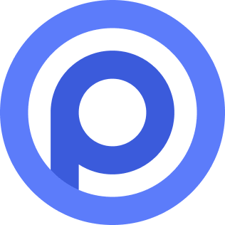

O Open Props chegou para revolucionar a forma como você constrói interfaces ao trazer o poder dos design tokens modernos para o CSS 100% nativo. Sem instalações pesadas ou sintaxes estranhas: você ganha acesso instantâneo a cores incríveis, sombras profundas e animações fluidas usando apenas variáveis nativas do navegador.

No desenvolvimento web moderno, a busca por produtividade muitas vezes nos obriga a escolher entre dois extremos: a rigidez de bibliotecas pesadas de CSS ou a digitação repetitiva de estilos nativos do zero. O Open Props surge como a solução definitiva para esse dilema, redefinindo como gerenciamos o design no código. Ele traz os chamados Design Tokens (variáveis padronizadas para cores, espaçamentos, sombras, animações e tipografia) diretamente para o CSS nativo. Isso significa que você ganha a velocidade de desenvolvimento de frameworks como o Tailwind, mas mantendo a elegância, a flexibilidade e a clareza do CSS padrão. Além disso possui mais algumas vantagens:
Esqueça arquivos de configuração gigantes, etapas de compilação complexas (build steps) ou instalação de dependências pesadas. O Open Props funciona instantaneamente via CDN ou NPM, permitindo que você tire ideias do papel em minutos.
Como utiliza o sistema nativo de var(--prop-name) do navegador, o seu código continua limpo, legível e padrão da web. Alterar temas, criar Dark Mode instantâneo ou ajustar a identidade do site torna-se uma tarefa simples de poucas linhas.
Não é preciso adivinhar a tonalidade ideal de uma cor, a curva de uma animação ou o tamanho exato de um espaçamento. As variáveis foram calibradas por especialistas em design, garantindo que suas interfaces fiquem harmoniosas por padrão.
O Open Props foi criado pelo desenvolvedor Adam Argyle, engenheiro de DevRel no Google focado em CSS. Ao observar o ecossistema web, ele percebeu uma grande divisão: de um lado, os frameworks utility-first (como o Tailwind) ofereciam extrema velocidade e padronização, mas exigiam etapas pesadas de compilação (build) e alteravam a forma tradicional de escrever HTML. Do outro, o CSS nativo evoluía a passos largos com as Variáveis CSS (Custom Properties), mas ainda exigia que o desenvolvedor criasse todos os seus tokens do zero.
A ideia do Open Props nasceu justamente para unificar o melhor desses dois mundos. Adam compilou anos de boas práticas de design system em um conjunto leve de variáveis nativas da web. O objetivo principal foi dar aos desenvolvedores a mesma consistência visual e produtividade dos grandes frameworks, mas usando apenas CSS puro, sem depender de instalações complexas, pré-processadores ou ferramentas de compilação.